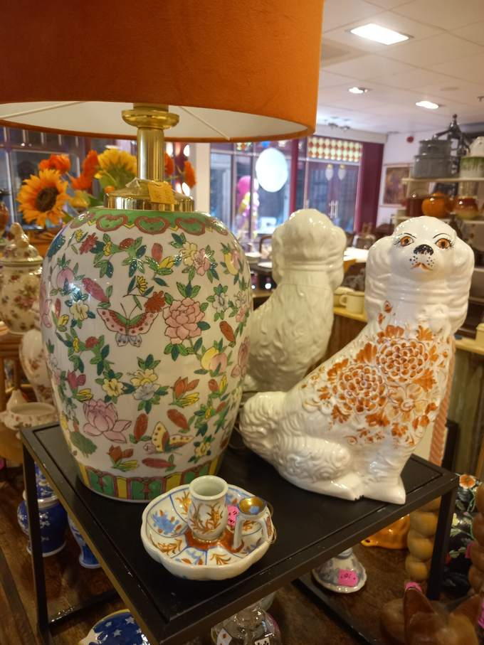
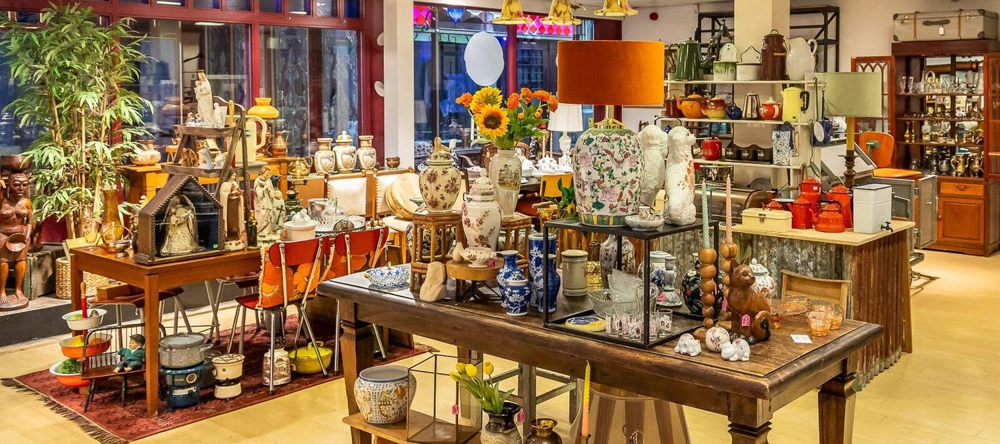
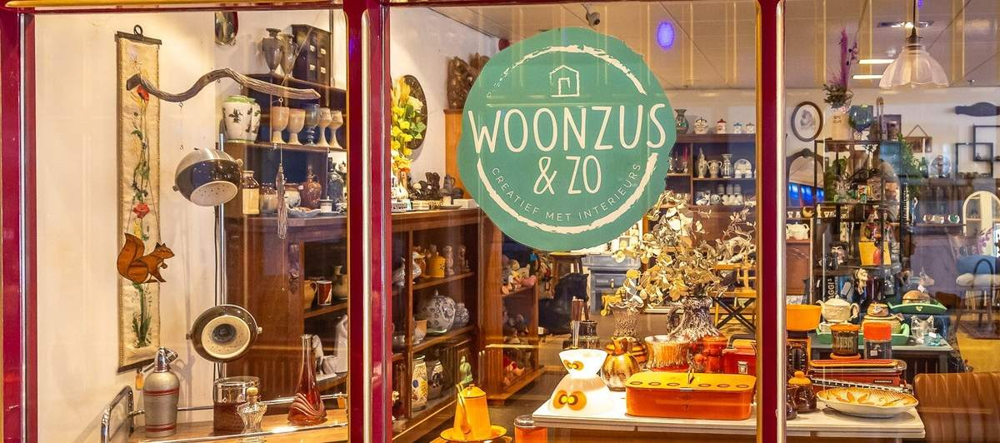
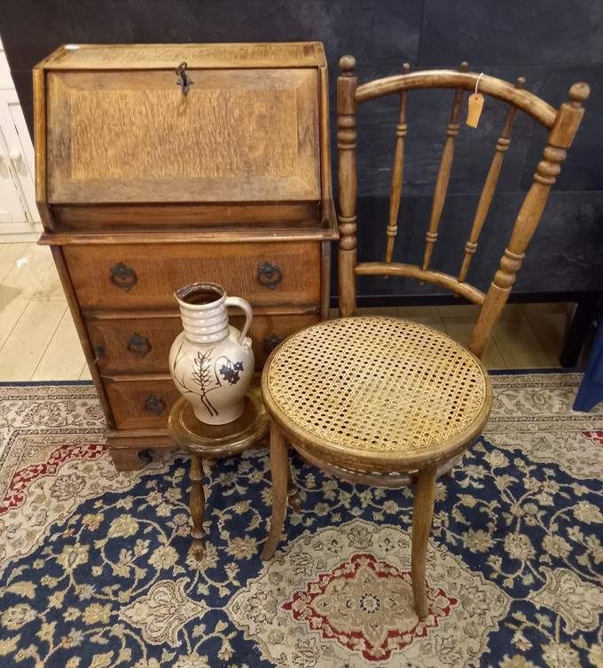
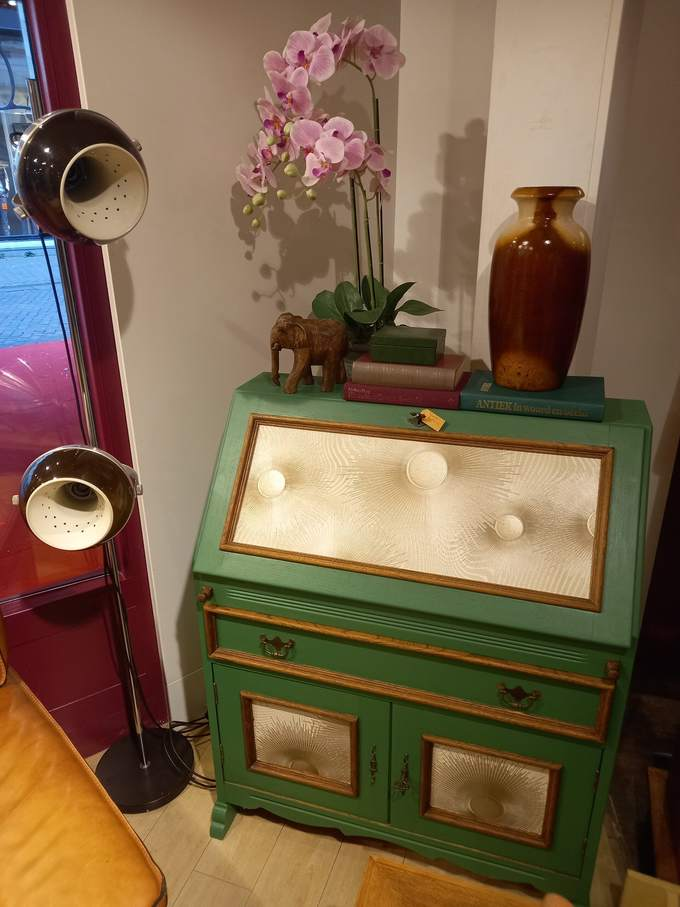
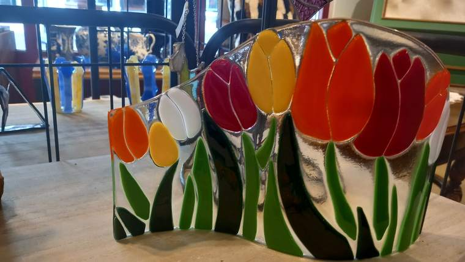
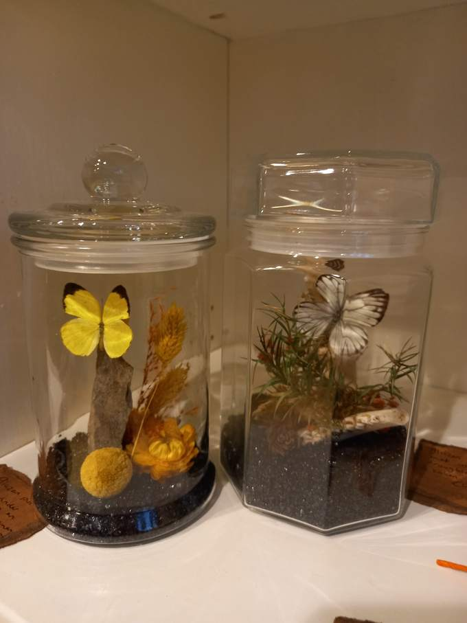
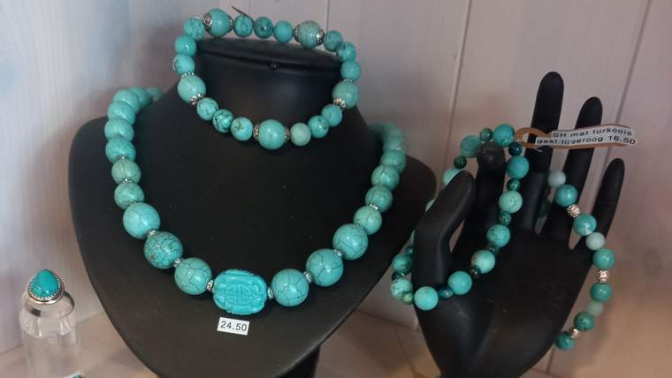
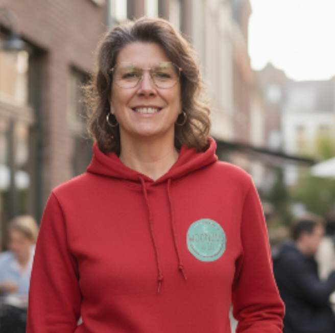

Woonaccessoires & cadeaus
Vintage en antiek, maar ook brocante, industrieel en curiosa.
Vaak maar 1 vanMeer info


Brocante, antiek, curiosa en handgemaakte cadeaus van verschillende deelnemers onder één dak. Bijna alles is er maar één keer. In de Passage, aan de kant van de Raadhuisstraat.
Open ma 13-17 · vr & za 10-17 uur
Niets komt van de groothandel. Alles is met zorg uitgezocht of zelf gemaakt, en van de meeste items is er maar één.

Vintage en antiek, maar ook brocante, industrieel en curiosa.

Tweedehands stukken, van een vintage stoel tot een antiek tafeltje.

Geverfd, hergebruikt of opgeknapt tot iets nieuws.

Glas in lood in Tiffany-stijl en fusion, ook in opdracht.

Van vondsten uit de natuur en tweedehands items.

Handgemaakt van edelstenen en mineralen, en vintage sieraden.
"Mijn favoriete winkel in Roosendaal! Heerlijk rondstruinen tussen nostalgische spulletjes die je ooit (stom genoeg) niet meer wilde en nu weer dolblij in je kast kunt zetten. Met zorg bij elkaar gezocht en tegen leuke prijzen."
Inge den Boer"Gezellig rond snuffelen! Prachtige collectie glas in lood! Leuk geholpen, dank je wel! P.s. goed initiatief hergebruik, mijn complimenten!"
Alice Veelenturf"(…) Wat een aanwinst in Roosendaal. Ik heb prachtige spullen gekocht. Vriendelijke warme omgeving. Zeker een aanrader."
cajoReviews van Google
Stuur een berichtje, dan houden we het voor je apart.
Iets groters ophalen met de auto? Dat kan op vrijdag en zaterdag vóór 11 uur.

"Er is nog zoveel moois te krijgen wat al bestaat en niet opnieuw gemaakt hoeft te worden."
Woonzus en Zo is een shop-in-shop: naast mijn eigen verzameling vind je de vondsten en creaties van verschillende deelnemers. Brocante uit Frankrijk en de Ardennen, industriële items, glaskunst, edelsteensieraden en curiosa.
Wij geloven in de charme van tweedehands en het verkleinen van de afvalhoop. Duurzaam en met stijl, zodat je huis een unieke uitstraling krijgt.
Staat je vraag er niet tussen? Stuur gerust een WhatsApp.
Wij ontvangen graag contant, ook omdat wij voor de inkoop vaak contant moeten betalen. Pinnen kan ook.
We checken alles op beschadigingen en repareren soms iets voordat het te koop gaat. Maar tweedehands is niet nieuw: er kunnen gebruikerssporen op zitten.
Sommige items bieden we goedkoop aan, zodat je er zelf mee aan de slag kunt.
Ja, binnen 10 km van Roosendaal. Kleinere spullen voor € 30, grotere spullen die met een aanhanger moeten voor € 60. We bezorgen tot de deur (begane grond), op afspraak en buiten de openingstijden.
Voor de deur parkeren kan niet, maar er zijn genoeg parkeergarages in de buurt. Iets groters ophalen met de auto kan op vrijdag en zaterdag vóór 11 uur.
In de tweedehandshandel is terugbrengen niet gebruikelijk, maar je kunt er van tevoren wel afspraken over maken.
Wij kopen niet in bij particulieren. We struinen zelf rommelmarkten en garagesales af, in binnen- en buitenland. Denk je toch iets unieks te hebben? Stuur dan foto's via WhatsApp of mail. Grote meubels die niet in een auto passen kopen we niet in.
Een vraag over een item, iets reserveren of laten bezorgen? Via WhatsApp zijn we het snelst bereikbaar.
Afwijkende tijden staan op Facebook en Instagram.